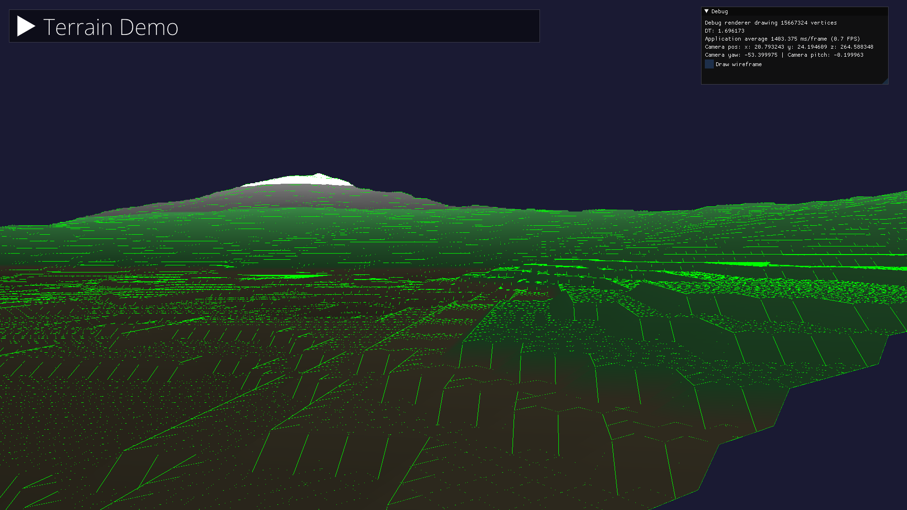

Projects from the first year of studying at Breda University of Applied Sciences:
Custom 3D RTS game engine running on Raspberry PI 4, with procedural terrain generation, physics using Bullet library and rendering with OpenGL ES
Custom engine for building 2D RTS games
Custom 2D raytracing engine
Galactic Goo, a monkey ball type of game running on UE5

Unity projects
My passion for programming and game development originates from a three-year course that I took at Natalja Kazakova’s computer school (NKKM), during which I learnt the essentials of programming in C++ and advanced techniques in C#, such as development of database management systems and game development in Unity. During the course, I worked on several specific projects that involved creating database systems and applications that would allow to keep track of certain elements. Besides that, I gained some experience in developing various game genres, such as platformers, first-person and isometric shooters, flying simulators, and high-score mobile games.
Here are some of the games I created during that time:
One of the most significant projects was the development of a high-score-based Unity game that contained a database system for hosting your high-score server developed using SQL and PHP programming languages. The artwork for the game was also designed by me using pixel art graphics and animations: